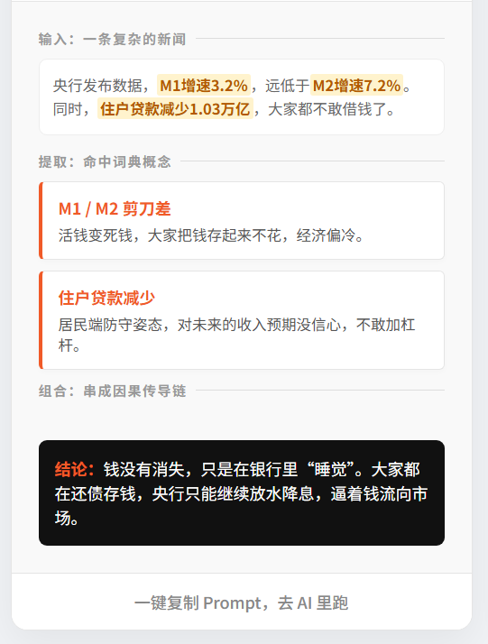
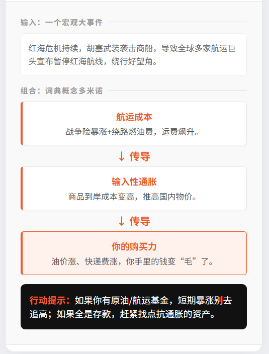
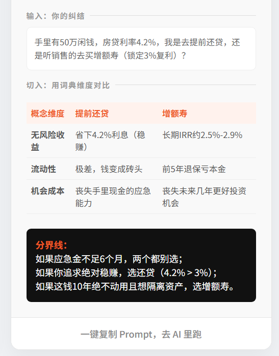
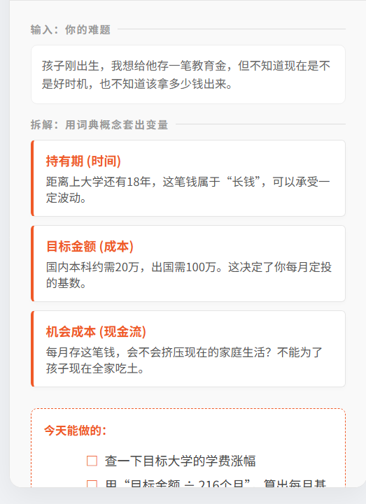
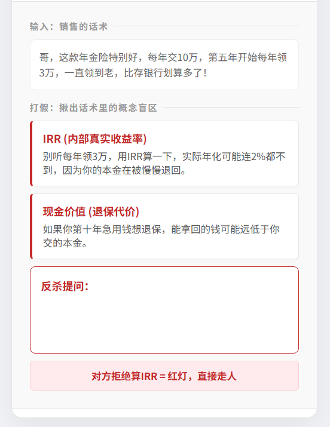
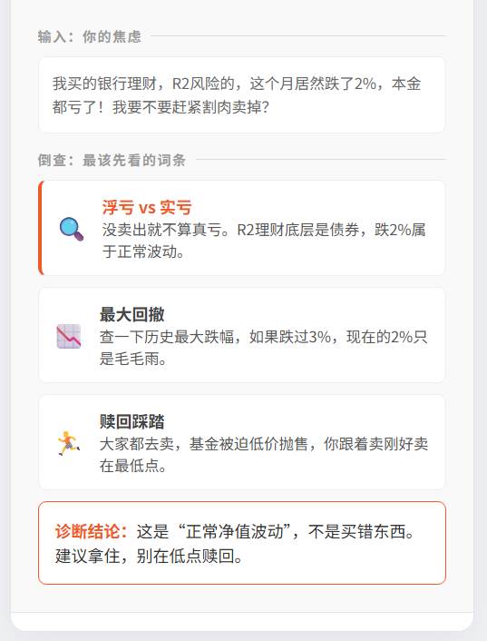
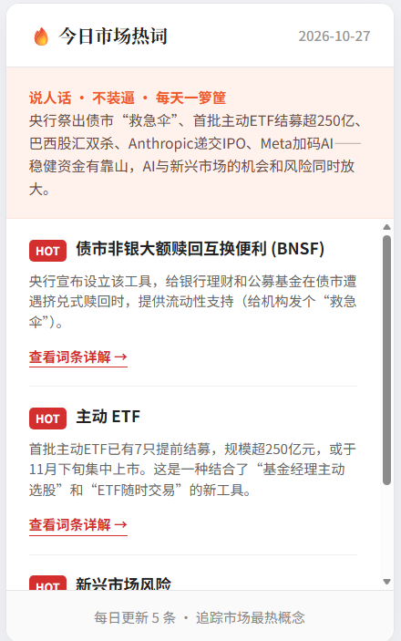

今日热词
每天 5 条市场正在聊的词。点一下，把解读提示词复制到你的 AI 里。
今天在聊什么
点击热词 → 触发 AI 解读
7 个场景，对应 7 种搞不懂
每个场景一个 Skill。点卡片看完整提示词，复制给你手边的 AI（ChatGPT / Claude / DeepSeek / 豆包都行）。

新闻翻译机
贴一段财经新闻，拆出 3-5 个核心概念，串成一条能讲清的因果线。
复制提示词

概念串联
一个复杂事件牵扯好几个概念，帮你搭一条从宏观到自家钱包的传导链。
复制提示词

二选一擂台
提前还贷还是买理财？四维并排对比，给出「什么条件下选哪个」的分界线。
复制提示词

决策拆解桌
买房、教育金、要不要辞职——先把决策拆成能填的变量，再谈怎么选。
复制提示词

防坑提问器
有人推荐了个产品，听着很香。先列出你该问销售的问题，以及什么回答是红灯。
复制提示词

理财急诊
买的理财亏了，割还是拿？先分清是正常波动还是买错了东西，再决定。
复制提示词

每日热词
今天市场在聊什么？拆出必须懂的几个词，串成一句能复述给朋友的话。
复制提示词
8 个场景的完整用法 →
哪个场景配哪个 Skill、提示词怎么改、哪些问题不该问它——使用指南里全写好了。
打开使用指南初心与边界
既是初心，也是合规声明。
理财这件事，卡住普通人的从来不是「没钱」，是「看不懂」。
看不懂新闻里的数字，看不懂产品说明书，看不懂销售在说什么。于是只能听别人说，听完还是不知道自己买的是什么。
我们想做的，是把每个词、每条新闻、每个产品，翻译成你听得懂的话。
我们做什么
- 把词条翻译成人话
- 把新闻拆成一条线
- 帮你列出该问的问题
- 帮你把决策拆成变量
- 告诉你该看哪几个词
- 教你看懂「保本保息」这类话术
我们不做什么
- 不推荐买什么、卖什么
- 不预测涨跌
- 不替你做决定
- 不承诺任何收益
- 不提供个性化投资建议
- 不替代持牌机构服务
合规三条红线
- 不无资质提供投资建议 —— 只输出「看什么 / 问什么 / 取决于什么」，不输出「买什么」。
- AI 生成内容不替代持牌服务 —— 定位是信息整理、知识科普、投资者教育。
- 不承诺收益、不保本保息 —— 这套工具专门用来拆穿「保本保息」话术。